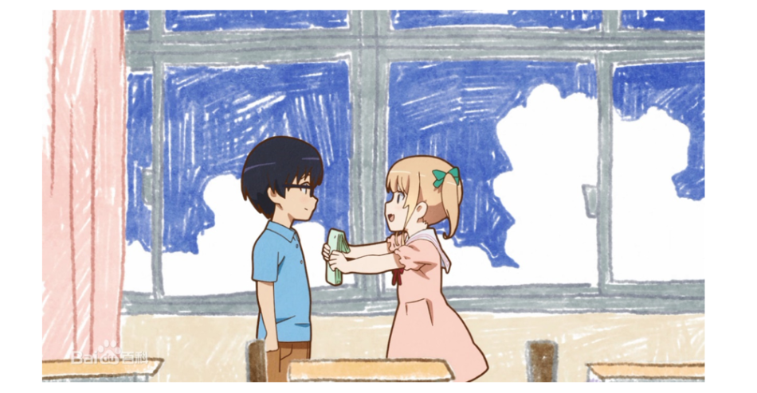

政观跑题|青梅为何不敌天降——动漫党争的演化心理学
收录于合集 #番外系列 9个
我们是否有必要用科学的眼光来分析虚构的艺术作品？这是上次《辉夜》分析发布后评论区的热门话题，也是艺术研究领域经久不息的核心争议。
在认知科学看来，人类所有的思维活动都基于对信息刺激的反应。人类的大脑只是一种高性能的处理器，而绝非原生思想的跑马场。所谓的自由意志仅限于将从信息中接受到的元素重组，从而建构未曾见过甚至本不存在的意象。因此，所有的虚构作品中都一定包含来自现实的元素。如果这些元素能够反映甚至指导人们的生活，那么显然就有进行科学分析的必要。而如果大量的作者和受众都对某一元素乐此不疲，那么它一定也是意义重大的科学议题。
今天我们就来聊一聊一个从严肃文学到大众艺术，甚至二次元作品都非常钟爱的元素——三角恋。在现实中，普通人的三角恋大多以无法挽回的悲剧收场。而在艺术世界中，三角恋也往往意味着令受众万分揪心的“胃痛”情节。但更为重要的是，真正成功的艺术作品不会在三角恋中明确分配善恶美丑，最终形成三人都有过失而又各具魅力的场面。这除了进一步加剧受众的揪心程度外，往往还会造成受众态度的分裂。以一男二女为例，不同的受众很可能会支持不同的女主争取爱情。在二次元领域，这就形成了最具吸引力也最具杀伤力的文化现象——党争。
二次元中三角恋和党争的源起难以考证。但真正将这一元素推向高潮，尤其是引爆国内二次元的巅峰之作无疑是丸户史明创作的游戏《白色相簿2》及其改编动画。该作品通过深入刻画三位主人公的心理活动，成功将玩家代入纠结复杂的三角恋世界。由于频繁引发受众情感的剧烈波动，《白色相簿2》也被称为二次元中的《红楼梦》。时至今日，我们也能在很多有关和更多无关的视频中看到“白学家”贡献的弹幕。
由于《白色相簿2》的成功，近年来各种主题的动漫都纷纷加入了党争元素。但并非所有的作者都具备丸户史明的功力，动漫中的党争往往会导致各个女主的标签化和刻板印象，男女主的感情发展也往往沦为模板化的套路。其中，最频繁出现的套路就是“青梅不敌天降”。也即，与男主青梅竹马、共同成长的女生最后只能止步于朋友，而在特定时刻偶遇的路人女主才能修成正果。青梅前期相处有多欢乐，后期退场就有多悲惨。这种注定令一些受众心碎的情节并非完全出于作者们的主观恶意，而是艺术技巧与科学规律的共同结果。一方面，从青梅竹马到白头偕老的故事缺乏戏剧冲突，难免会让受众感到厌烦。而另一方面，更重要的是，青梅不敌天降的故事在现实中也屡试不爽，甚至已经被很多科学家视为真理。

事实上，早在十九世纪，韦斯特马克就在巨著《人类婚姻史》中提出了青梅必败的论断：幼年时期亲密生活的男女难以产生性吸引力。这也被后世称为“韦斯特马克效应”。
韦斯特马克效应得到了不少经验证据的支撑。在以色列某处的集体农场中，大量的同年龄段儿童被统一抚养。这些孩子几乎每时每刻都呆在一起，可谓青梅竹马的终极版本。随后的统计数据表明，只有极少的儿童成年后会和农场的伙伴结婚。而那些反例则恰恰在最初的几年中被分开抚养。这似乎说明，青梅竹马开始得越早，悲剧的可能性就越大。
此外，还有学者专门研究了中国台湾地区的童婚（童养媳）现象。童婚中的女孩在极小的时候就被送往男方家庭抚养，然后和自己未来的丈夫一起长大，直至成年完婚。统计数据表明，相对于普通婚姻中的妻子，童养媳的生育率显著更低、出轨和离婚的概率则显著更高。这意味着即使青梅竹马被强制保送到结婚，他们的婚姻也很难幸福。
当然，青梅竹马并非完全没有机会。从基因与演化的角度来看，韦斯特马克效应很可能是人类避免乱伦和近亲交配的一种适应机制。因为基因相近的个体更可能被共同抚养，其结合也更可能产生遗传疾病。换言之，能够对幼年时期亲密生活对象产生性冲动的个体很可能已经被遗传疾病等选择机制淘汰了。
然而，如果完全从基因与演化的角度来看待乱伦退避，那么个体应当演化出相应的适应机制来帮助自己避免基因相近的异性，而不是仅仅依靠共同成长的环境来判断。因为这样才可以在最大程度上避免近亲交配。目前科学家已经发现了其中一条具体机制，即体味偏好。和很多动物一样，人类也会分泌由主要组织相容性复合体（major histocompatibility complex，MHC）控制的物质，这种物质的气味对于自身而言习以为常，但却会引起异性的强烈反应。MHC相近的个体会彼此排斥对方的体味，而MHC不同的个体则更有可能相互吸引。因此，MHC的吸引很可能就是一见钟情的生物学基础。所以如果青梅竹马想要逆天改命地违抗韦斯特马克效应，也许就只有寄希望于MHC的差异性了。但如果青梅竹马从小一起亲密地生活，而天降女主又带着差异更大的MHC，那么党争就基本已经画上句号。
撰文：陆屹洲 审校：殷昊 编辑：康张城